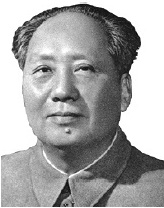

Mao Zedung (1893-1976), 1949’dan ölümüne dek komünist Çin’in yöneticisiydi. Mao, yoksullaşmış ülkesini modernize etti, ama bunu insan yaşamında muazzam bedeller karşılığında yaptı. Çoğu tahminlere göre on milyonlarca Çinli, açlıktan öldü veya Mao’nun çalkantılı idaresi sırasında idam edildi. Çağdaş Çin liderleri, Mao’nun felsefesinin çoğunu reddettiler, ama Mao’yu yeryüzündeki en kalabalık ülkeyi birleştiren ve Batı’nın ellerinde yüzyıllar süren aşağılanmayı sona erdiren bir adam ve hürmet edilen bir figür olarak gördüler.

Çin’in kırsal bölgesinde köylü bir çiftçinin oğlu olan Mao, 1920’lerde pek çok diğer genç Çinli entelektüelle beraber komünizmi benimsedi. O zaman Çin, Japon İmparatorluğu’ndan gelen tehdit altındaydı, ama istilacılara direnmek için de çok fazla bölünmüş durumdaydı. Mao, bir okulda öğretmendi, ama hemen tüm enerjisini siyasete adadı. 1920’lerin sonlarından II. Dünya Savaşı’nın patlak vermesine kadar komünist Kızıl Ordu, hem Japon hem de Çinli ayrılıkçı gruplarla savaşıyordu. Bu dönemde bir gerilla önderi olarak Mao, Maoizm olarak bilinegelen radikal bir siyasi felsefe ortaya koydu.
Kızıl Ordu, sonunda savaştan galip çıktı ve Çin Halk Cumhuriyeti, 1949’da Mao’yu yeni lideri ilan etti. Yönetim, komünistler için bir dizi yeni zorluklar sundu. Sonuçlar, genel itibariyle bir felaket oldu. Mao’nun Çin’in sanayi üretimini arttırmak için yaptığı, başarısızlıkla sonuçlanan 1958 girişimi, otuz milyona varan ölümlere neden oldu. 1966’da Mao, yüz binlerce ölüme sebep olan ve Çin’in tarihî mirasını yok eden, kapitalist ve dinî etkilerin kökünü kazımaya yönelik ve “Kültür Devrimi” adıyla bilinen hareketi başlattı. “Başkan Mao”, “Büyük Kaptan” gibi lakaplar verilen Mao’ya, takipçileri tarafından neredeyse tapıldı.
Batı’da Mao, soldan birçok destekçiyi kendisine çekti ve Maoizm, çeşitli başka gerilla hareketlerini etkiledi; ama çoğu insan, idaresinin zalimliği ve yıkımından dehşete kapılmıştı. Mao’nun ölümünden sonra Çin, komünist uygulamaları bir kenara bırakmaya başladı. İsmi dışında tamamen kapitalist bir ülkeye dönüşen Çin, dünyanın yükselen bir süper gücü olmak için sırtını Mao tarafından oluşturulan birliğe dayadı.
EK BİLGİLER:
1. Soğuk Savaş sırasında Çin, başlangıçta Amerika Birleşik Devletleri’ne karşı Sovyetler Birliği’ndeki komünist arkadaşları ile aynı cephedeydi. Ancak Mao, sonunda SSCB’den şüphelenmeye başladı. Amerika Birleşik Devletleri ile daha yakın bağlar arayan Mao, Başkan Richard Nixon’ı 1972’de Pekin’e meşhur gezisini yapmak üzere davet etti.
2. Kültür Devrimi sırasında Çinliler, “Küçük Kırmızı Kitap” olarak bilinen Mao’nun alıntılarının bir derlemesini okumaya zorlandılar. Kitap, dünya genelinde dağıtıldı. Okuyucularının çok büyük bir kısmı, onu istemeyerek okudular. “Küçük Kırmızı Kitap”, dünyadaki en popüler kitaplardan biridir.
3. Vladimir Lenin’inki gibi Mao’nun cesedi de mumyalanmıştır ve ölümünden sonra halka gösterilmek üzere mozoleye konmuştur. Pekin’deki Tiananmen Meydanı’ndaki muazzam mozolesi, her yıl binlerce ziyaretçiyi çekmektedir.